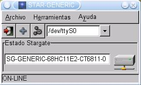
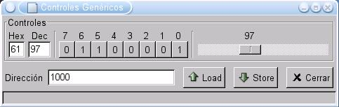
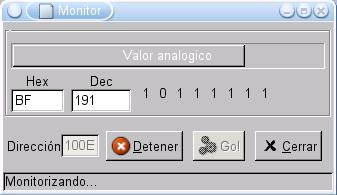

- Nombre: star-generic
- Servicio: Cliente para el Stargate genérico
- Lenguaje: C
- Plataforma: Linux
- Tipo: Convencional
- Descripción: Acceso a los servicios LOAD y STORE
- Aplicaciones: Control y monitorización de sistemas desde el PC
|
STAR-GENERIC: CLIENTE PARA STARGATE GENERICO |
|
|
|
Para probar el Stargate genérico, se ha desarrollado un cliente gráfico de pruebas, star-generic, basado en la libstargate 1.0.1. Nos permite acceder al mapa de memoria del microcontrolador de una forma fácil y sencilla, y realizar diferente pruebas. Resulta muy útil para:
Comprobar si una implementación de un Stargate genérico funciona
Comprobar que los servicios básicos de cualquier Stargate convencional funcionan
Acceder a todos los recursos del microcontrolador de una forma sencilla, por ejemplo para sacar información por su puertos o leer sus entradas
Sirve de programa modelo para la creación de otros clientes más complejos
Plataforma: Linux
Librerías gráficas: GTK2
Lenguaje: C
Dependencias: libstargate 1.0.1, además de las GTK2
Licencia: GPL
Este programa se distribuye bajo licencia GPL
La ventana principal muestra la información sobre el estado de la conexión y el Stargate detectado. Regularmente se hace un PING para actualizar el estado de la conexión y al detectarse un nuevo stargate se identifica (Servicio ID).
|
|
 |
|
1) No se ha detectado ningún Stargate |
2) Detectado un Stargate Genérico, implementado en una tarjeta CT6811 |
El cliente está constantemente chequeando el estado de la conexión. Si se pierde nos informa. Es posible conectar y desconectar Stargates "en caliente". Si se conecta un nuevo Stargate, el cliente lo identificará.
Sólo en el caso de que sea un Stargate genérico, el usuario tendrá acceso a los servicios LOAD y STORE, a través de un control genérico o usando el modo monitor.
|
 |
 |
|
3) Control genérico. Desde esta ventana se tiene acceso a los servicos LOAD y STORE. Los datos se visualizan en binario, decimal, hexadecimal y en una barra de desplazamiento (datos analógicos). |
4)Modo Monitor. Se introduce la dirección que se quiere comprobar, y periodicamente se accece al servicio LOAD para mostrar lo que se encuentra en ella. Resulta muy útil para comprobar el estado de sensores conectados en puertos digitales del stargate. |
Anteriormente, recibía el nombre de g-sgc-generic. Se puede encontrar más información aquí.
|
Ultima versión (1.2.1) |
|
Fuentes para Linux. |
|
|
Ficheros binarios, para Linux. Cualquier distribución. Instalar con make install |
|
|
Paquete para Debian/Sarge. Necesario instalar previamente la libstargate-1.0.1 |
|
|
Versión estática. No necesita instalar la libstargate-1.0.1 |
|
|
Paquete fuente para Debian/Sarge (Ficheros *orig.tar.gz, *.dsc y *.diff) |
|
Versiones anteriores |
|
star-generic-1.2.tgz (365KB) |
Ficheros fuentes y binario. Versión 1.2 |
|
g-sgc-generic-1.0.tgz (19KB) |
Ficheros fuentes y binario. Versión 1.0. |
Debian/Sarge
Instalar primero la librería libstargate 1.0.1. Para ello descargar el paquete para Debian/Sarge y ejecutar:
Descargar el paquete del star-generic para Debian/Sarge y teclear:
Teclar star-generic para ejecutarlo
El paquete star-generic-static es exactamente igual pero la librería libstargate-1.0.1 está compilada con el propio programa, de manera que no hace falta instalarla previamente. Para ejecutarlo hay que teclear: star-generic-static.
Otras distribuciones
Bajar y descomprimir el paquete star-generic-1.2.1-bin.tar.gz
Los ejecutables ya están compilados. Instalarlos con make install
Contiene tanto la versión estática como la dinámica
Proyecto Stargate: Página principal del proyecto
servicios básicos: PING, ID
Stargate genérico: Servicios LOAD y STORE
Stargate Servos8 : Permite mover servos
libstargate 1.0: Librería para hacer clientes para Stargates
tarjeta CT6811: Plataforma donde se pueden implementar Stargates
26/Dic/2004: Publicada versión 1.2.1. Cambios:
Preparado para ser instalado en cualquier distribución
Hechos paquetes para específicos para Debian/Sarge
22/Feb/2004: Publicada versión 1.2. Cambios:
Soporte para cualquier dispositivo serie, no sólo COM1
Ventana principal que detecta el estado de la conexión y el tipo de Stargte
Ventana de controles genéricos para acceso a los servicios LOAD y STORE, que utilizar datos en binario, decimal y hexadecimal
Modo monitor para estar constantemente comprobando el valor de una dirección
Se pueden abrir tantas ventanas de controles genéricos y de monitorización como se quieran
22/Oct/2003: Publicada versión 1.0 del cliente, con la siguiente funcionalidad:
Sólo se soporta el COM1
Basado en la librería libstargate-1.0
Comprobación del estado de la conexión
Servicios LOAD y STORE sólo si el Stargate es genérico